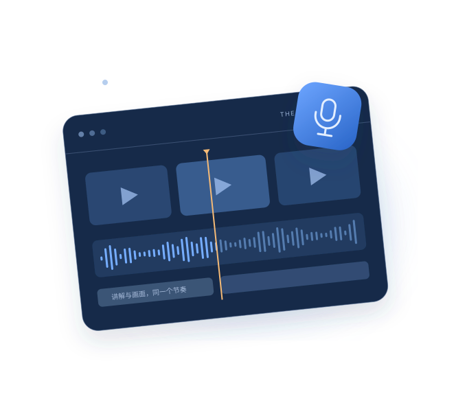

一段录屏，
就是教程的起点。
导入你已有的操作录像，再放进说明文档或知识笔记。AI 对照画面和资料，整理步骤、章节与第一版讲解。
YOUR KNOWLEDGE. BEAUTIFULLY TAUGHT.
放进一段录屏，添上你的知识。
让 AI 理解、整理、配音，
把那些「我演示给你看」，变成值得反复观看的教程。
软件免费 · 无需购买授权AI 功能需 yakcool.com 充值 + 自备 KEY ↗
FROM RECORDING TO TEACHING
不用在剪辑、写稿、配音软件之间来回切换。
顺着你的思路，把一段操作变成一堂课。
导入你已有的操作录像，再放进说明文档或知识笔记。AI 对照画面和资料，整理步骤、章节与第一版讲解。
让视觉模型看操作，让改稿模型校正知识。你可以用对话调整表达，也能逐段编辑分镜。每一次修改，都有版本可追溯。
确认剧本后，再合成普通话旁白。Tutor 按实际音频长度安排定格、原速操作与观察时间，让讲解和演示保持同一个节奏。

米白画布、清晰字幕和章节进度，让观众跟得上。视频、字幕、剧本与制作记录一起保存，下一次修改也有迹可循。
MADE WITH TUTOR
看看章节、字幕和画面怎样一起工作。
这是用 Tutor 渲染器实际生成的演示。
A STUDIO THAT THINKS WITH YOU
每段讲什么、用哪一帧、要不要停一下。
你能看见过程，也能决定结果。
「这段再简洁一点」「补充操作前提」。直接说出修改要求，再对照分镜检查。
当前剧本经人工确认后才能制作。修改内容会撤销旧确认，避免拿错版本。
视觉、改稿、配音分别配置模型源，查看接口返回的用量与估算费用。
素材与成片保存在本地；生成时，相关视频、资料和文本会发送至所选模型服务。
FREE SOFTWARE. YOUR OWN KEY.
Tutor 不收取软件授权费，也不需要购买 Pro。
使用 AI 功能，需要前往 yakcool.com 充值并配置自己的 KEY。
登录平台，充值并获取你自己的 API KEY。模型可用范围与实际扣费以平台为准。
打开「模型与制作设置」，填写对应源的 KEY，并为视觉、改稿和配音选择可用模型。
按需调用 AI。检查内容、确认版本，再进行配音与视频制作。
软件免费不代表 AI 调用免费。视频理解、改稿和配音会消耗 KEY 对应的服务额度；具体费用以服务平台实际计费为准。
READY WHEN YOU ARE
发布于 {{RELEASE_DATE}}
查看更新说明 ↗
M 系列芯片 · DMG 安装包
下载 Apple Silicon 版 下载 ZIP 压缩包 ↗Intel 芯片 · DMG 安装包
下载 Intel 版 下载 ZIP 压缩包 ↗Windows 10 / 11 · 安装程序
下载 Windows 版 下载免安装 ZIP ↗下载免费。AI 功能需前往 yakcool.com 充值，并在应用内配置自己的 API KEY。
Tutor 桌面软件免费下载和使用，不收软件授权费。AI 功能需要你前往 yakcool.com 充值，获取并配置自己的 API KEY。模型调用消耗服务额度，具体价格与扣费以服务平台为准。
先在 yakcool.com 充值并获取 KEY，再打开 Tutor 的「模型与制作设置」，填写对应模型源的 KEY，为视觉、改稿和配音角色选择平台可用的模型。导入录屏与知识资料后，生成剧本，人工检查并确认，再进行配音和制作。
项目、原始素材和生成文件保存在本机。调用 AI 时，相关视频、知识资料和剧本文本会发送给你配置的模型服务。请根据资料内容选择合适的服务，并遵循服务方的数据使用规则。本地保存不等于模型生成过程完全离线。
你需要先检查当前版本并手动确认，Tutor 才会进行配音与渲染。修改剧本或知识资料后，旧确认会撤销，需要重新审核确认。
支持最长 10 分钟的录屏，知识文件支持 TXT、MD、JSON、DOCX，可组织为 1–5 个章节。输出包括 MP4 视频、SRT 字幕、JSON 剧本、剪辑时间表和成本记录。句级字幕按旁白长度编排，并非逐字强制对齐。
使用正式发行包无需额外安装 Node.js 或 FFmpeg，也无需购买 ReactBits 等开发组件授权。安装应用后配置你自己的模型 KEY 即可。开发者从源码构建界面时，需要遵循仓库说明及相关组件许可证。
TURN WHAT YOU KNOW INTO WHAT OTHERS LEARN.
从一段录屏开始，把经验讲给更多人。